Books I have finished with.
Fiction, cookery and the odd art book — read once, kept well, and taking up shelf space I do not have.
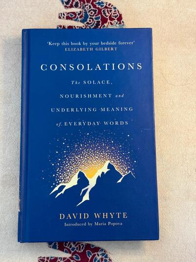
Elizabeth Gilbert says keep this book by your bedside forever, and readers agree, awarding it a stellar 4.45 stars on Goodreads. Poet David Whyte…
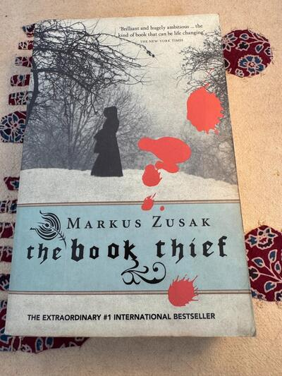
The New York Times called it the kind of book that can be life changing, and millions of readers agree. Narrated by Death itself, this Number 1…
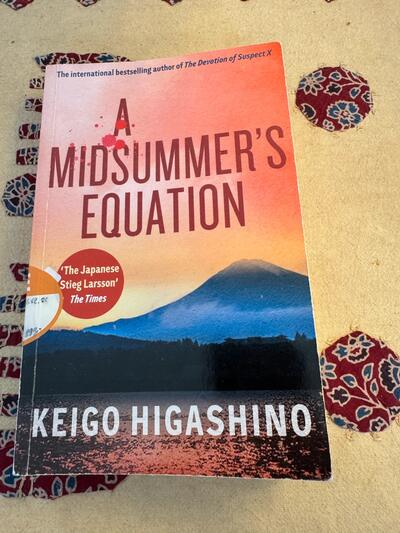
Physicist detective Manabu Yukawa travels to a struggling seaside resort town for a mining conference, only to be pulled into a murder investigation…
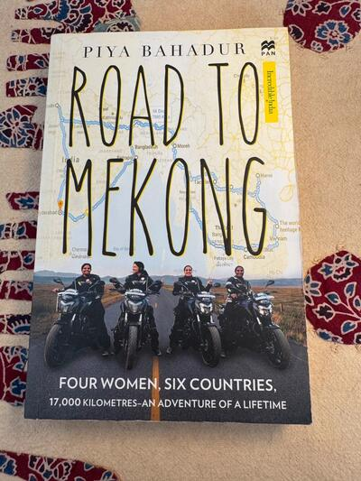
Four women left their regular lives behind for fifty six days to ride motorbikes 17,000 kilometres across six countries, from Hyderabad through…
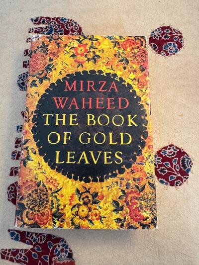
A forbidden love story between a Sunni boy and Shia girl unfolds against the backdrop of 1990s Kashmir, as war and political violence close in on…
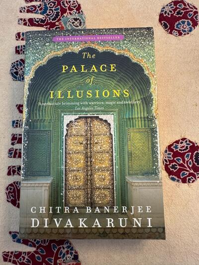
The timeless Mahabharata retold entirely from the perspective of Panchaali, wife of the five Pandava brothers, tracing her fiery birth, her…
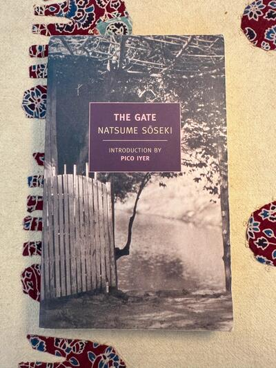
A quietly devastating novel about a humble couple exiled by their own families for marrying without consent, whose fragile peace is shattered when a…
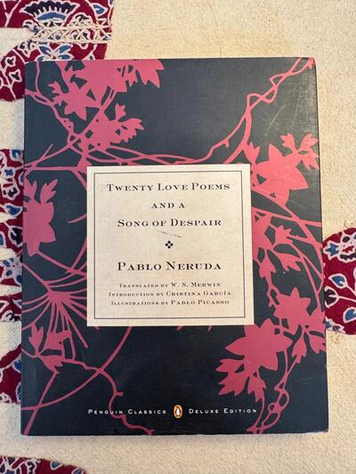
Written when Neruda was only nineteen, this collection of sensual, aching love poetry launched him onto the world stage and remains one of the most…
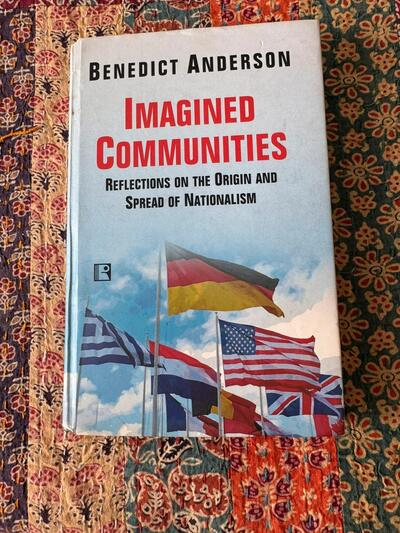
The most influential book ever written on the origins of nationalism, examining what drives people to live, die, and kill for their nation. The…
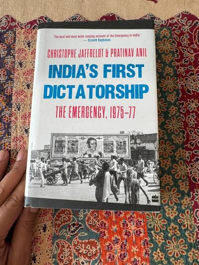
A groundbreaking, meticulously researched account of the 21 month suspension of Indian democracy under Indira Gandhi, called the best and most wide…
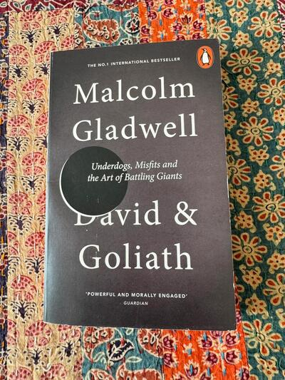
An energetic, counterintuitive exploration of why and how underdogs succeed, from small class sizes to civil rights battles to disadvantages that…
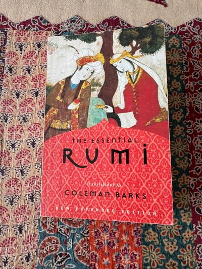
The definitive collection of thirteenth century Sufi mystic Rumi's poetry, translated by Coleman Barks, the man widely credited with making Rumi the…
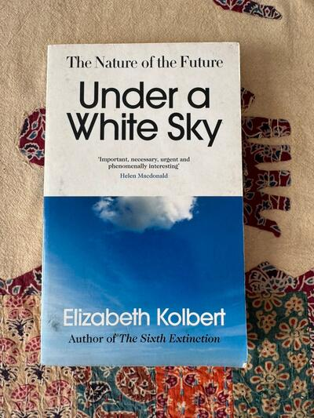
From the Pulitzer Prize winning author of The Sixth Extinction comes a shocking look at humanity's wildly controversial attempts to control nature.…
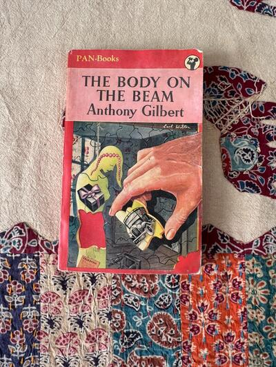
A young woman is found hanging in a third-rate lodging house with a suicide note on the table, but a sharp-eyed constable spots details that don't…
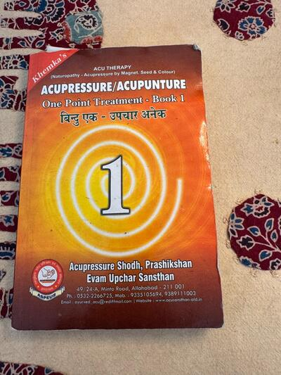
A bilingual Hindi and English pocket guide to acupressure and acupuncture, built entirely around a single point per ailment for fast, easy relief.…
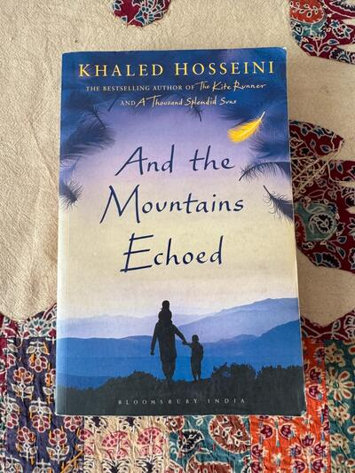
From the multi-million copy bestselling author of The Kite Runner comes a breathtaking story of heartbreak, family secrets, and indestructible love.…
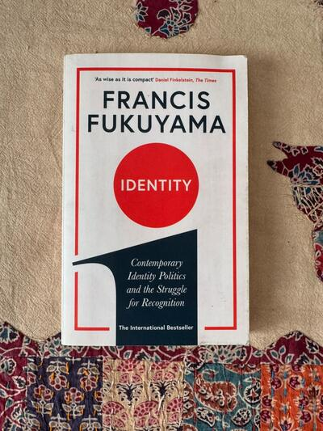
From the world-famous author of The End of History comes an urgent, eye-opening breakdown of modern populist nationalism and global identity…
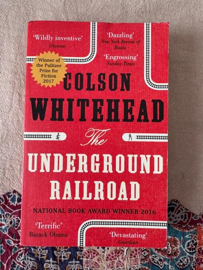
Winner of the Pulitzer Prize and the National Book Award, this unputdownable phenomenon was named one of the best books of the 21st century by The…
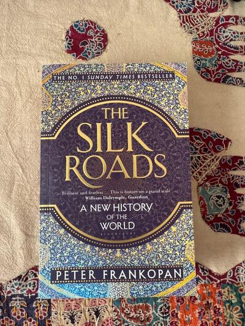
The massive international number one Sunday Times bestseller that completely rewrites human history from an eastern perspective. Renowned Oxford…
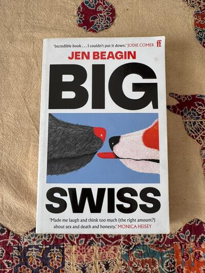
Soon to be a major HBO television series produced by A24 starring Jodie Comer, this unhinged dark comedy was named Book of the Year by Cosmopolitan,…
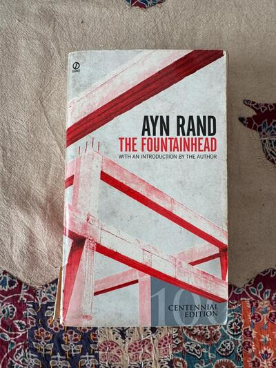
An intransigent young architect wages a violent battle against conventional standards, and an explosive love affair with the one woman determined to…
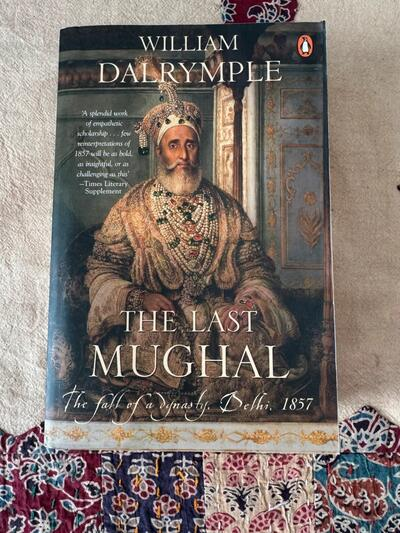
Winner of the prestigious Duff Cooper Prize, this explosive historical masterpiece exposes the blood-soaked fall of Delhi and the tragic end of…
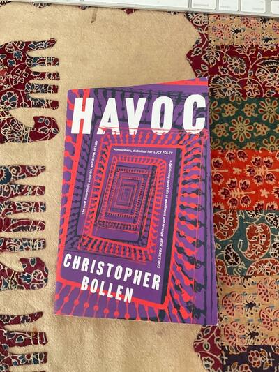
An 81 year old widow at a decaying luxury hotel in Egypt goes to war with an 8 year old boy, and neither one plays fair. The New York Times called…
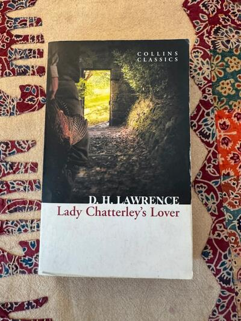
The novel so controversial it was banned in Britain for over thirty years and put on trial for obscenity in 1960. A passionate, boundary breaking…
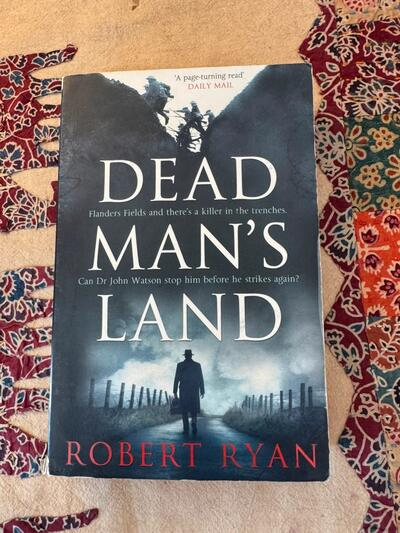
A page turning read. Dr John Watson serves as an army doctor in the trenches of Flanders Fields, where a serial killer is stalking the soldiers. A…
Written by a Rohingya poet who lived through the genocide, this memoir has been praised as using the pen for the good of humanity. A rare,…
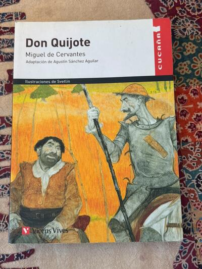
A beautifully illustrated adaptation of the greatest novel ever written in Spanish, featuring artwork by Svetlin. Ideal for Spanish learners,…
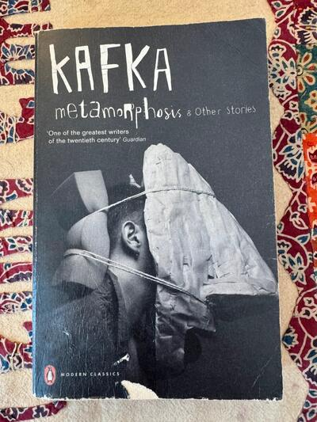
Kafka is regarded as one of the greatest writers of the twentieth century. This Penguin Modern Classics edition collects Metamorphosis alongside his…
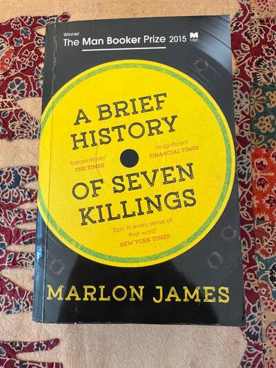
Winner of the Man Booker Prize 2015, called epic and magnificent by major critics. A sprawling, kaleidoscopic novel following the attempted…
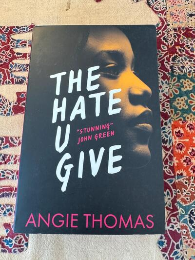
Praised by John Green as stunning. A multi award winning, number one New York Times bestseller inspired by the Black Lives Matter movement,…
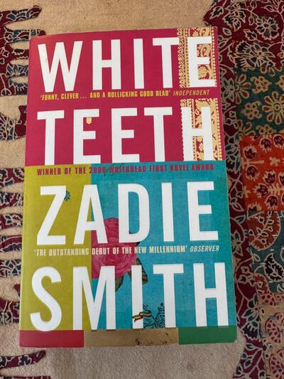
Winner of the 2000 Whitbread First Novel Award, praised as the standout debut of its generation. A sprawling, hilarious multigenerational saga of…
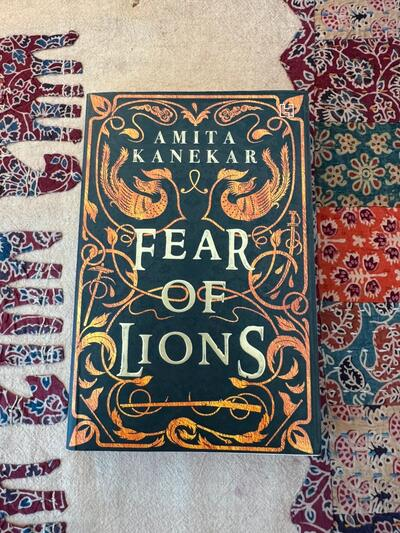
A beautifully produced book with gilded cover art. Set in 1673 India under Aurangzeb's rule, two young Mughal nobles stumble into the aftermath of a…
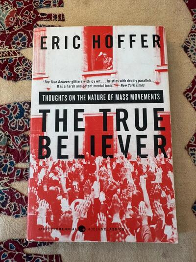
The New York Times called it a powerful, unsettling read. Written in 1951, this slim classic explains why ordinary people join fanatical movements…
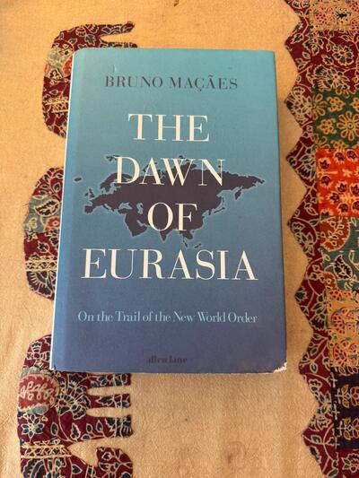
The former Portuguese Europe Minister spent six months travelling overland from Baku to Beijing to prove Europe and Asia are merging into one…
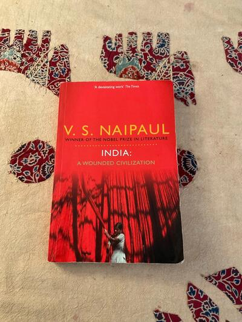
The book The Times called "a devastating work" Nobel laureate V.S. Naipaul's brutally honest reckoning with India after Indira Gandhi's Emergency.…
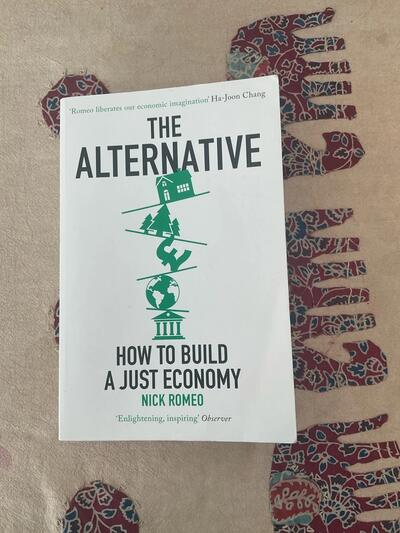
Capitalism isn't broken — it was built this way. Nick Romeo exposes the hidden alternatives already working around the world: real experiments in…
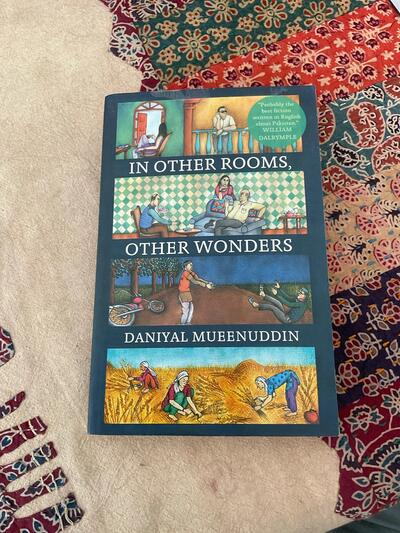
Interlinked short stories set in rural and urban Pakistan, orbiting the household of a wealthy feudal landowner and the servants, relatives, and…
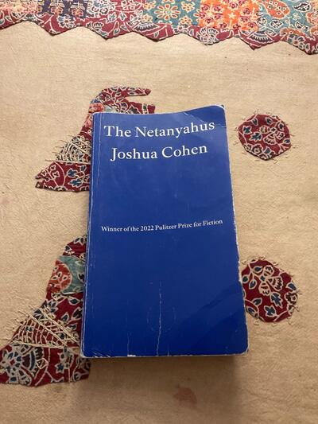
The Netanyahus by Joshua Cohen. Winner of the 2022 Pulitzer Prize for Fiction. Goodreads has over 81,000 ratings across Cohen's books. Comic campus…
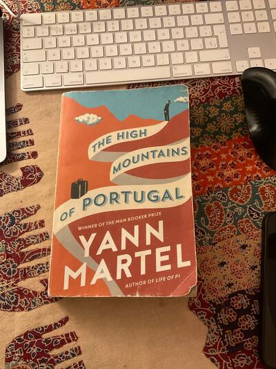
The High Mountains of Portugal by Yann Martel, author of Life of Pi. Paperback, used condition with limited cover wear and shelf wear (see photos).…
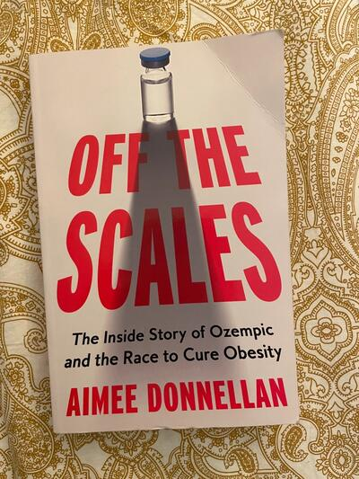
Bought one week ago. Language: English. Gripping, deeply researched look at the rise of Ozempic and how these weight-loss drugs are reshaping…
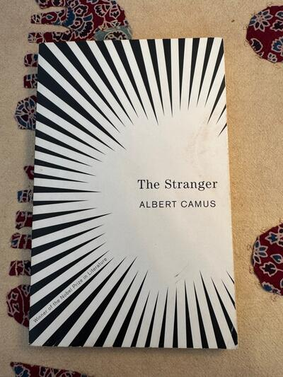
An ordinary man is unwittingly drawn into a senseless murder on a sun drenched Algerian beach in this cornerstone of existentialist literature. Le…
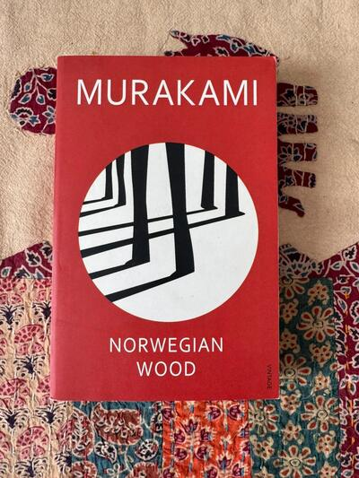
The multi-million copy international sensation that launched Haruki Murakami into global superstardom and inspired the acclaimed feature film. Set…
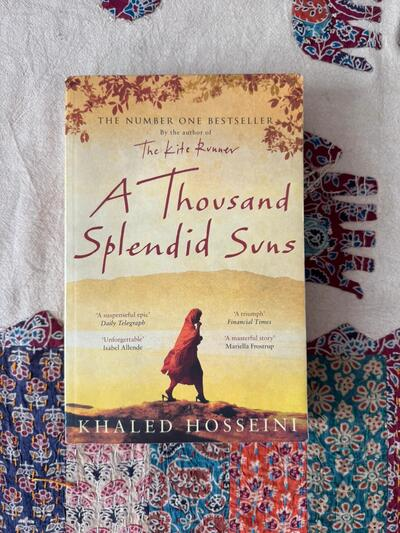
Ranked among the greatest novels ever written by millions of readers, this number one New York Times bestseller is an emotional tour de force.…
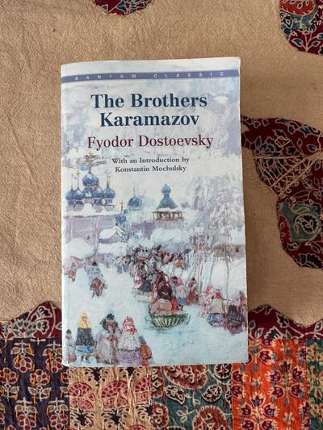
Hailed by Albert Einstein and Sigmund Freud as one of the greatest novels ever written, this explosive classic is the ultimate psychological thrill…
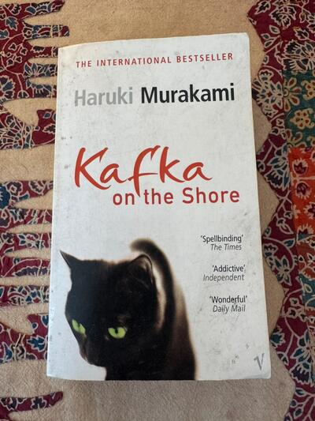
Called spellbinding, addictive, and wonderful by major critics. A surreal, dreamlike masterpiece weaving together a runaway teenager and an old man…
Nothing matches those filters.
Prices are converted from Czech koruna at the European Central Bank reference rate and rounded to the nearest euro. Vinted charges in your own currency at checkout, so the amount you pay may differ slightly.
How buying works
- Ask first, if you want. Measurements, fabric, how something actually fits — message me and I will tell you straight, including when a piece is not right for you.
- Buy it on Vinted. Every piece links to its listing. Payment, postage and buyer protection are all handled there, so there is no separate checkout on this site and I never see your card details.
- It posts from Prague. Usually within a day or two of the order. Vinted's buyer protection covers the return if the item is not as described.
Everything is second-hand or one-of-a-kind from my own collection, so each piece exists once — when it is gone it is gone. Sizes are the label size; ask me for real measurements before you buy.